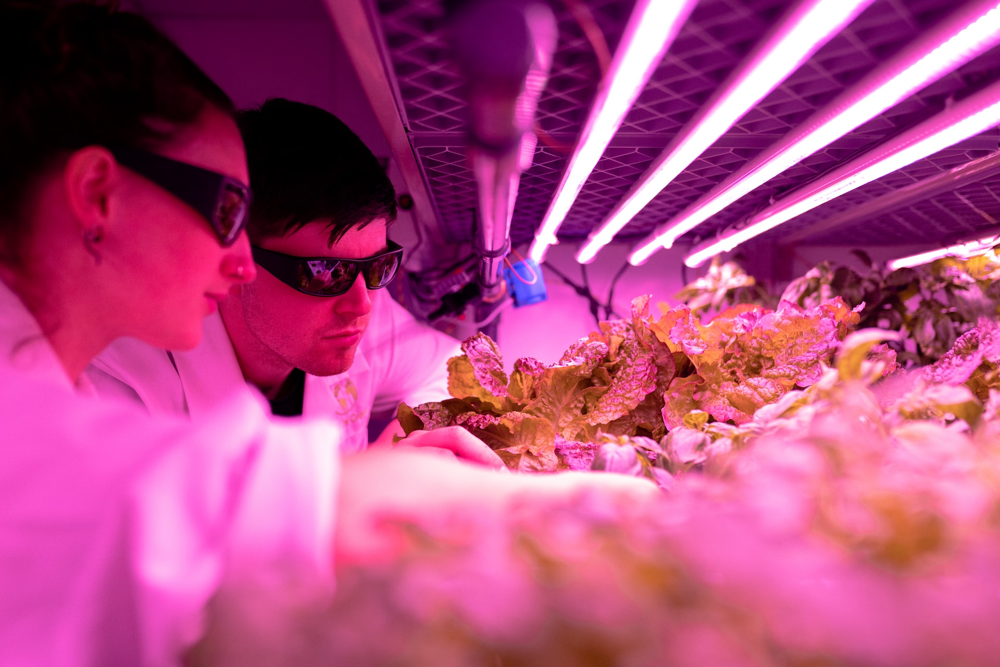

Günümüz dünyasında tarım alanları yeterli gıda ihtiyacını karşılayamaz hale gelmiştir bunun başlıca
nedenlerinden biri ise bilinçsiz tarım uygulamalarıdır. Bilinçsiz tarımın başında ise toprağının kimyasal
yapısını
tanımayan, toprak analizi yaptırmayan ve alanında uzman kişilerden yardım almayan çiftçiler gelmektedir.
Toprak analizi yaptırmadaki amaç toprakta eksik bulunan bitki besin elementlerini analiz ederek, çiftçiye doğru
miktarda bitki besin elementinin gübre olarak toprağa verilmesini sağlamaktır.
Genellikle çiftçiler toprak analizini alanında uzman kişilerle değerlendirir ve uygun ekim programını buna göre
belirlerler. Tarımda verimliliğin ve ürün kalitesinin arttırılması, minimum girdi kullanımı, gıda güvenilirliği,
doğal
kaynakların ve çevrenin korunması gibi çeşitli konularda teknolojik uygulamaların kullanılması, tarımsal
işlemlerin kolaylaştırılması ve çözüm veya iyileştirme bekleyen sorunlara alternatif çözümler geliştirilmesine
katkı sağlamaktadır. Bu nedenle teknoloji destekli uygulamaların tarımsal alanda kullanılması
yaygınlaşmıştır. Tarım uygulamaları kontrollü bir tarımsal faaliyet olup, tüm uygulamaların kayıt altına
alınmasını esas almaktadır.
Bu çalışmada teknoloji destekli çiftçi takip sistemlerinin geliştirilmesi ile çiftçilerin ve uzmanların aynı
platformda
bir araya gelmesi düşünülmektedir. Geliştirilen yazılımla çiftçi sisteme entegre edilmiş ziraat mühendisleri ile
anlık görüşmeler yapabilecek ve ekim programı çıkartabilecektir. Aynı zamanda gelir/gider hesaplaması, yapay
zekâ destekli anlık hava durumu bildirimi menüleri ile çiftçiye sistem yardımcı olacaktır. Mobil uygulama olarak
tasarlanan bu sistemde çiftçi yaptırdığı toprak analizi verisini girerek tarlasında bulunan toprağı hakkında
sistem önerileri ve uzman görüşlerini alarak verimli üretim yapabilecektir.
Projenin amacı;
Bu projenin amacı çiftçi ve ziraat mühendislerini aynı platformda buluşturarak, uzman görüşleriyle çiftçi
deneyimlerini aynı mobil uygulama üzerinde birleştirmek ve tarımsal verimliliği arttırmaktır. Proje hedefleri:
- Çiftçi bu uygulama ile istediği zaman ziraat mühendisine ulaşabilecek ve tarlasının sorunlarını veya yapmayı
düşündüğü işler hakkında bilgi ve tavsiye alabilecektir.
- Tarım ile uğraşan kişiler ve ziraat mühendisi ile arasındaki iletişimi güçlenecek doğru ürün üretimi
sağlanacaktır.
- Toprak analizi sonuçlarına göre üretim aşamasına geçilecektir.
- Gübreleme işlemleri uzman görüşleriyle yapılacaktır.
- Bölgesel üretim kapasitesi arttırılacak farklı çiftçilerden görüşler alınabilecektir.
- Çiftçilerin farklı arazilerde elde edilen ürün verimlikleri karşılaştırmalı incelenebilecektir.
- Tarımda bilinçlendirmeyi ve verimli toprakların işlenmesini sağlayıp, toprak analizi verilerini işleyerek buna
uygun önerilerde bulunulacaktır.
- Çiftçinin yıllık giderlerinin hesaplanması ve buna uygun
Hedeflerimiz

Ziraat Mühendisleri ile İletişim
Tarım her dönemde olduğu gibi günümüzde de büyük bir öneme sahiptir. Bu kapsamda konunun en önemli
yönü
projede üretici rolünde olan çiftçilerin ve bunlarla uzman şekilde diyalog kuracak mühendislerin tek
birplatformda birbirleriyle iletişim sağlamasına imkân tanımaktır.
Toprak analiz sonuçlarının sistemsel olarak tek bir uygulamada birleştirilmesi
Çiftçi ve mühendisin bilgi ve deneyimlerinin ortak şekilde yönetilmesi
Toprak analizlerinin yıllara göre raporlanması
Toprak analizi sonuçlarına göre üretim aşamasına geçilecektir.
Proje başarılı olduğu taktirde, projenin online tanıtım platformlarına yüklenmesi ve tüm Türkiye'de
tanıtılması.
Proje Sonunda geliştirilen uygulama öğrenci
kongrelerinde veya öğrenci bitirme proje pazarlarında
sunulacaktır.